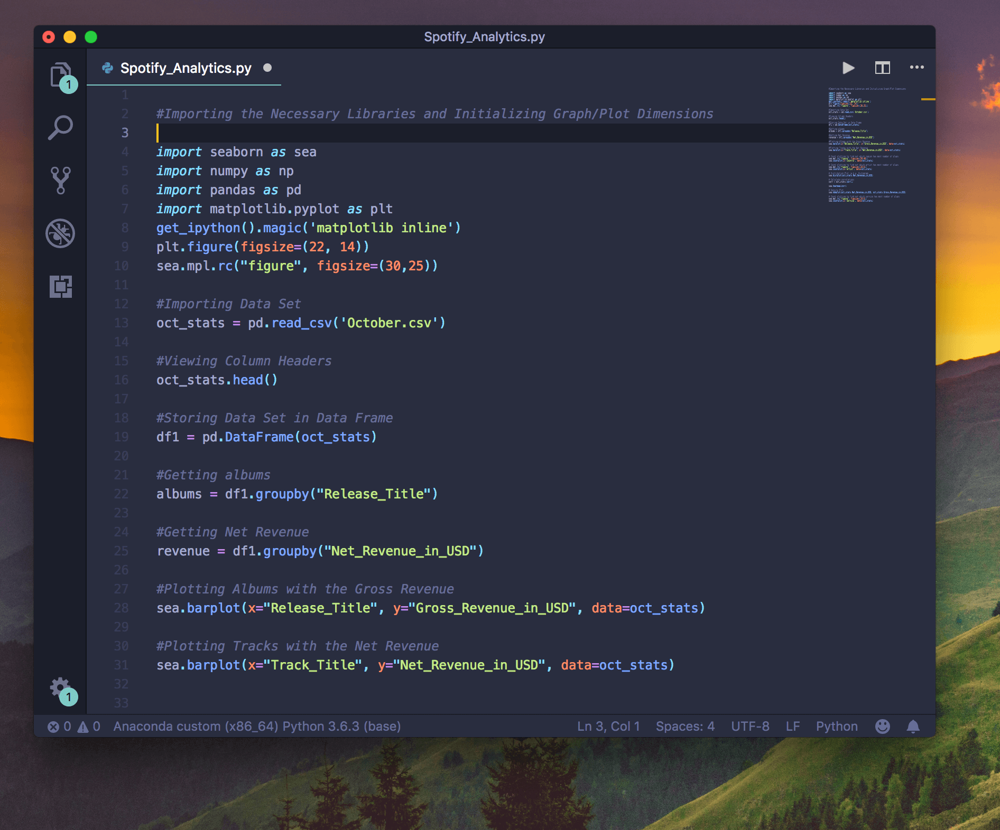
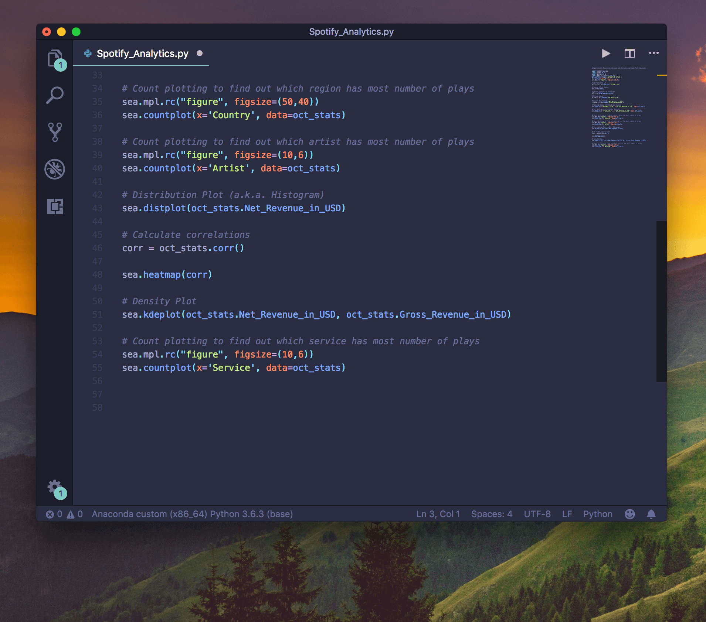
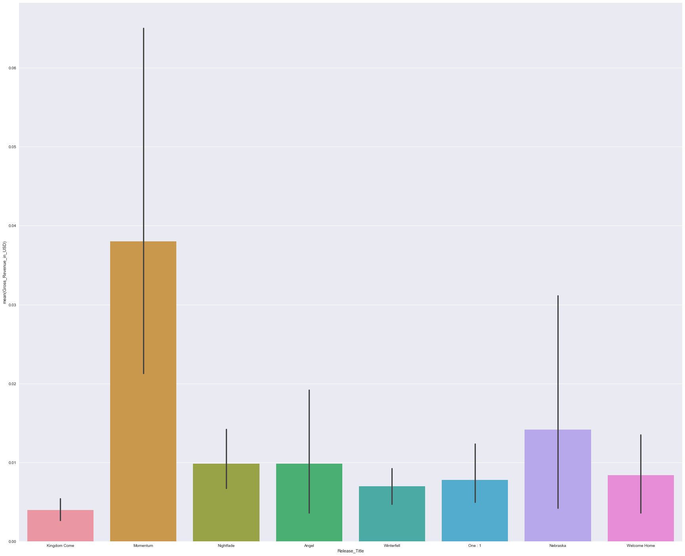
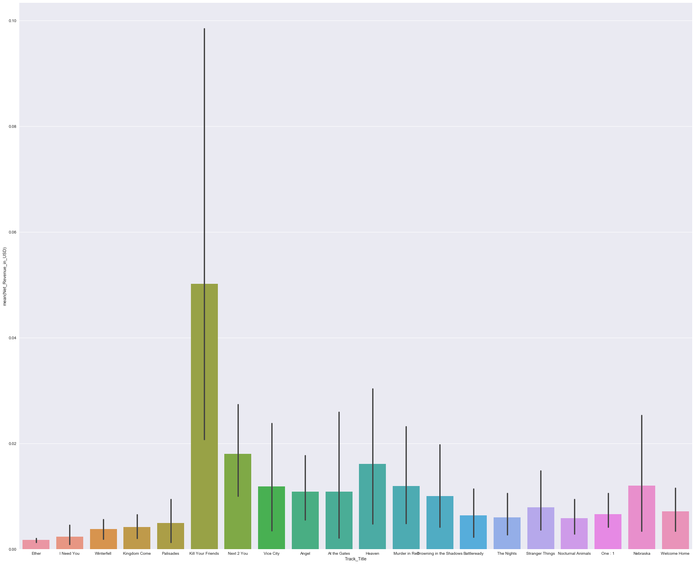

Music Analysis
Overview
Visualizing and analyzing streaming music statistics.
Roles
Programmer
Timeline
Oct 2018
Introduction
This article is to help musicians choose the best music streaming service to get new listeners and fans. Let me start by introducing myself. My name is Gurudutt Perichetla. I’m a 21-year-old music producer who likes to mix and match different
genres of music to make musical experiments.
I’ve been producing music since 2015, under several pseudonyms which never really clicked. I could neither get a good fanbase nor get exposure. It was in 2016 that I tried to put out music with my
real name. I started producing Hip Hop beats and experimental electronic music. These tracks were up on Soundcloud, where I could get around 30 plays a month. Same scenario. Things weren’t really picking up.
Impact of Bandcamp
So, the best thing I heard was to use Bandcamp, since it was way more customizable and was more like a catalog ~ a portfolio for people to check out, compared to the cluttered mess of Soundcloud’s artist pages. I had released a couple of tracks during
the Halloween Season where I got little to no plays. I had cross-posted those tracks to appropriate subreddits where I hoped to get a couple of plays, but things were the same.
I had removed those tracks and on the 31st of December, I had uploaded
my first EP, which comprised of Synthwave and Retro Pop tracks. And within two days, I got over 640 plays and 123 downloads. I was amazed! And so with the same hope, I had released another EP on Valentine’s Day. But this couldn’t reach the
same level of listens or downloads of the first. I had released another in May, which got some positive feedback, but I wasn’t making any money off of my music.
That was when I started reading articles on how the Music Industry was changing since physical audio CDs don’t bring artists money, nowadays. Artists either earned money from extensive touring or streaming platforms such as Spotify, Apple Music, and Tidal.
I knew that Music Streaming was the next wave that could really help my music get some exposure, and so I started looking for music distributors. The only thing that I understood from major distributors was that you either needed to have some
sort of membership or pay per release to get your tracks on these platforms. I had contacted a friend of mine who works at a small distributor and he helped me get my music on the streaming platforms — Spotify, Apple Music, Google Play, Amazon
and Deezer.
Comparing Streaming Music Services

I get monthly statistics from my distributor about plays, revenue and where my tracks are played, and how long they are played — in the form of a .csv file. I’m a CS undergrad who’s really interested in Data Science and thought of analyzing the CSV file to find out intricate details regarding the plays, the revenue, and whatnot.

You can tell me that by using 'Spotify for Artists' I can visualize these details, but that’s applicable only for Spotify, not other platforms. So, I visualized the
data from the CSV file using Python and its libraries such as Seaborn and Pandas.
Analysis #1: Albums

Initially, I plotted “Album” versus “Gross Revenue” to find out which album was getting the highest number of plays. I had found out that the albums that were more commercial and radio-friendly got the highest number of revenue — meaning
a higher number of plays.
Analysis #2: Tracks

Similarly, by plotting “Tracks” against “Net Revenue”, I had found that “Kill Your Friends”, a Brostep track, was my highest played and“Ether”, an Indian influenced Deep House Track, was my least played track. Other genres such as “New Jack
Swing”, “Future Bass” were preferred to “Synthwave” and “Alternative”.
Analysis #3: Countries

As I expected, most of my listens were from the United States, with Canada at second place. I was shocked to find that I got a good amount of listens from Poland and Sweden. The countries where my music was least played were Taiwan, Peru and Luxembourg
to name a few.